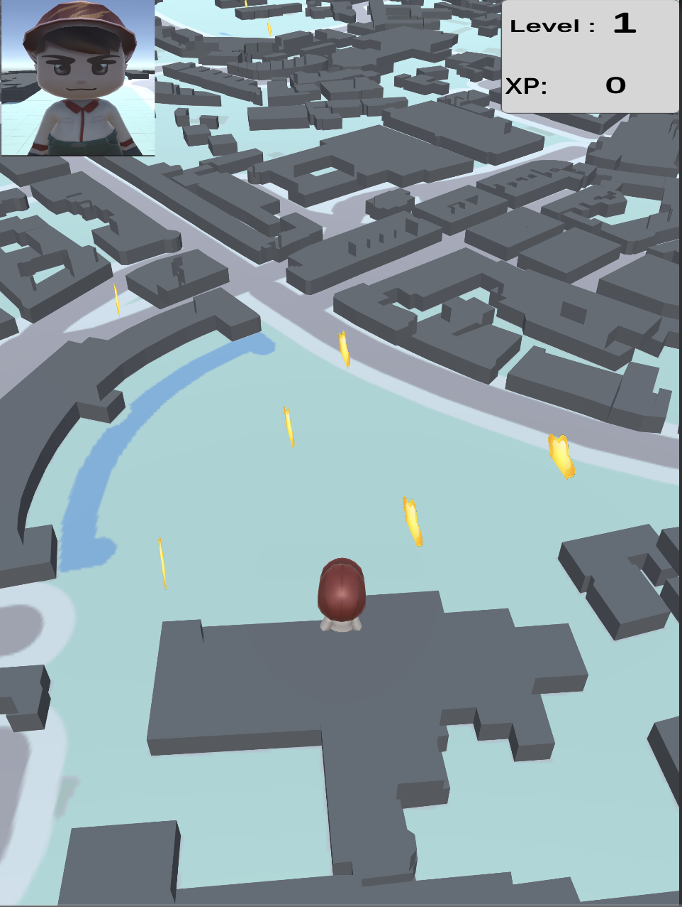

CityGo
Final-year dissertation — location-based mobile game with real-time map SDK and in-app mini-games.

What is this project?
CityGo is my university final-year dissertation project — a location-based mobile game that uses a map SDK to track live real-world positions. Players explore the city and unlock mini-games to earn points and experience, encouraging movement through play.
What I contributed
- Built the dissertation project around Mapbox for live GPS map tracking on iOS and Android.
- Snake mini-game — movement, food spawning, and scoring.
- Whack-A-Mole mini-game — finish runs to earn points and EXP on the open-world map.
- EXP and progression UI tied into the main game world.